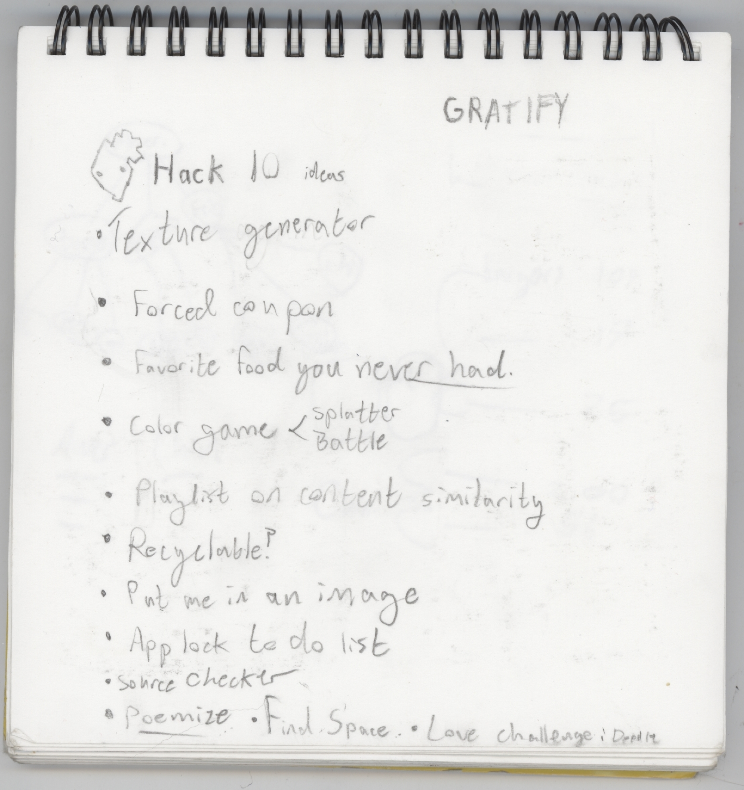
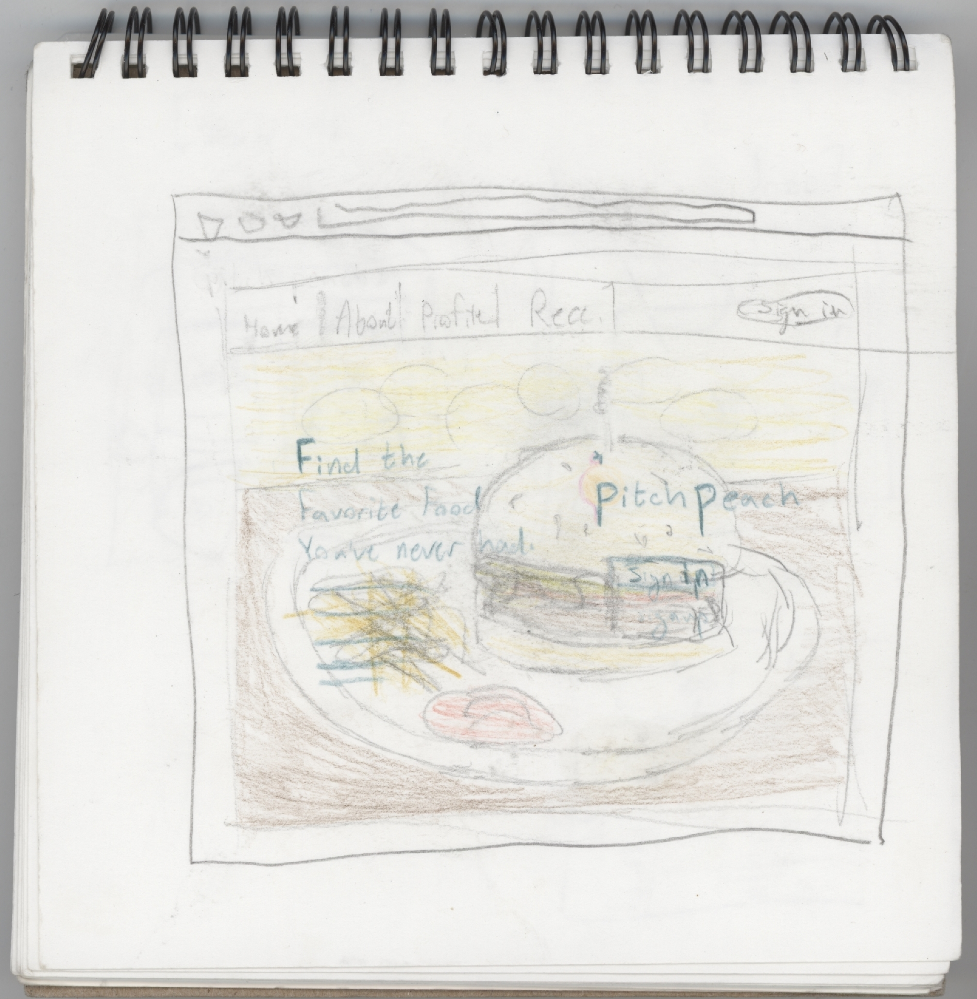
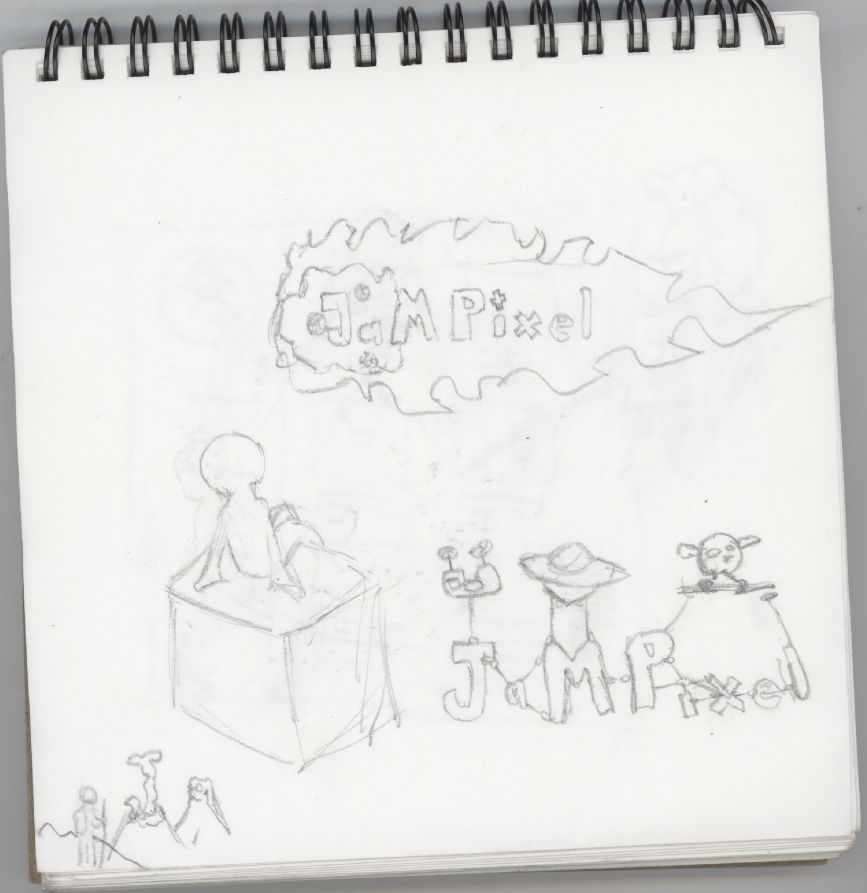
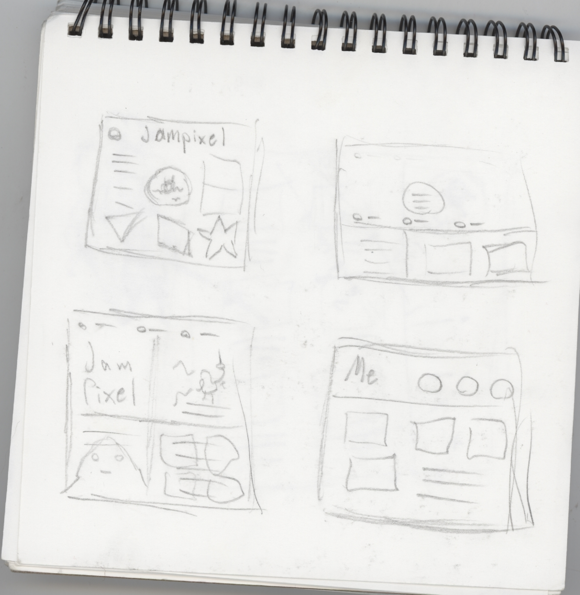
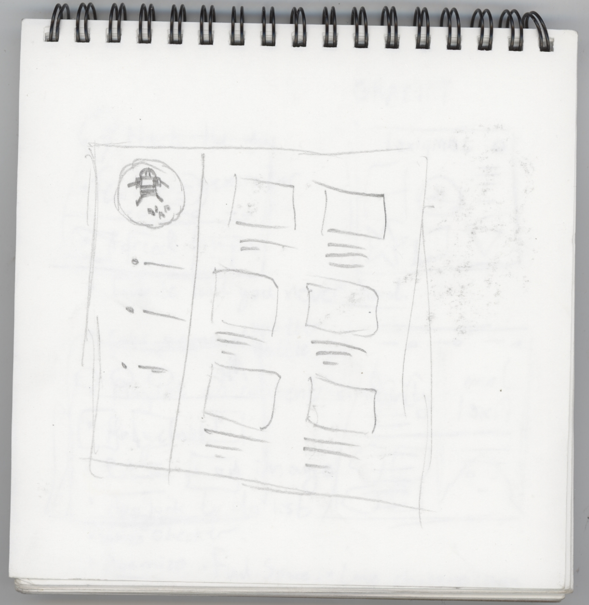
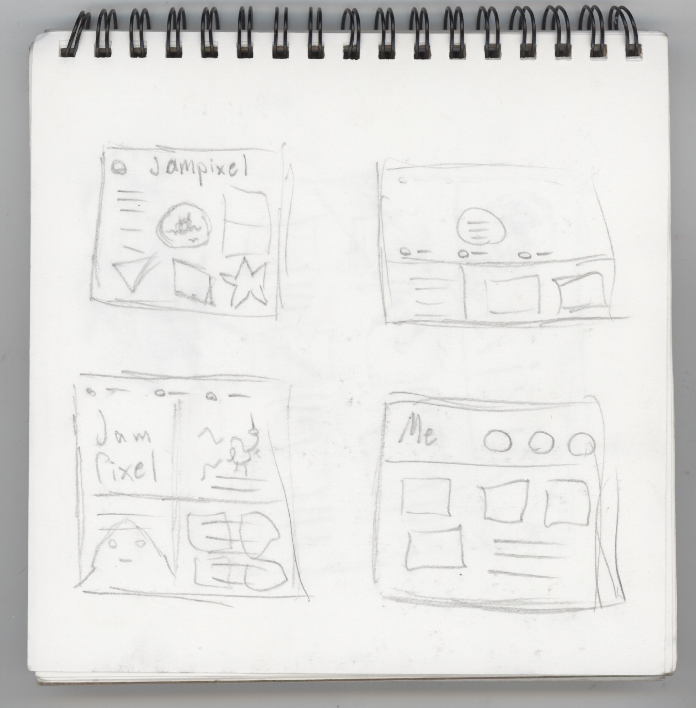

Last semester I found myself as lead designer along with a three programmers in my first hackathon. I was lead designer, and also ended up being the product manager of sorts. Giving pitches, and talking through conflicts of ideas with the team.
A few days before the hackathon was set to start the four of us gathered in a computer lab to discuss our gameplan. Sometimes the first step isn't just brainstormingdesigns, it's brainstorming an entire idea. I had a group of 4 people and we just started by brainstorming. We came up with as many ideas as we could, shared the ones we liked and then mulled over the ideas for the next few days . We didn't have a set challenge, we just wanted to make the coolest thing we could in 36 hours. It wasn't until we were an hour into the hackathon that we decided on a food reccomendation site, based on the what users liked and didn't like.
After we had decided it was time to think of the basic architecture. The team discussed together, and drew diagrams.
With the architecture decided it was time to do some mock ups! I sketched, got some feedback and sketched some more. One of the things the group quickly decided on is we wanted to open with a big background image, that made anyone on the site's mouth water.
One last concept sketch with some color and we were ready to go!
The rest of the process was making the site in html and css, getting feedback, reiterating, rinse repeat. Then there was a lot of pitching and convincing and we made it to the finals! You can see some snapshots of the final product or just go to the live demo.
This site was a class project in which, I had free reign. So I created a site showcasing some pixel art I had been making. I didn't have a huge skill set when I started this guy, but I had a lot of passion and an eye for design.
Below is a doodle of some logos, and features I was thinking about. Though such an intense title graphic never made it into the site, the feeling of fun definitely helped me get the creative juices flowing.

Surprise! Sketching is pretty much a staple for creating a great website. It's always important to get a lot of ideas out there and not just stop at the first nice looking sketch or idea.
  After I got my sketches done, I iterated, and interviewed until I had a site that satisfied. I asked questions like: How does the site make you feel? What's good? What's bad? Can you find x? Is the menu easy to understand? and Many more.
It's also interesting to note that none of my initial sketches really resemble my final site. Sometimes you just have to be open to inspiration in the middle of coding or when in the middle of a user test. Later I would end up adding a big ol' form with some heavy client and server side validation too. And the same process of implement, and interview ruled (But with a lot more debugging this time). You can see some screenshots of the site here.
Email
jmp464@cornell.edu
© James Palmer 2015